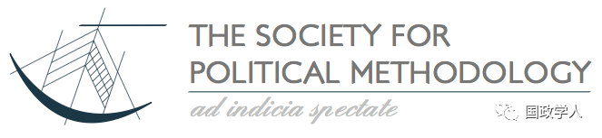
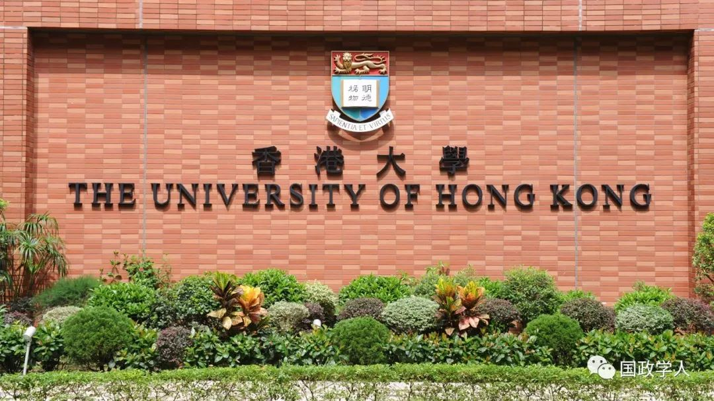
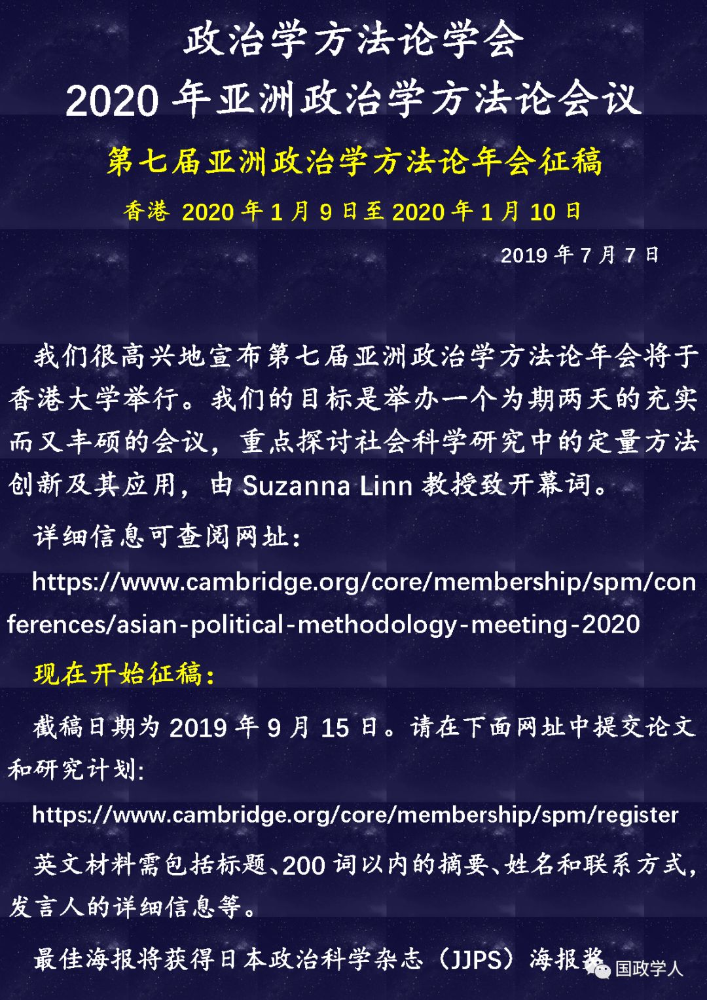
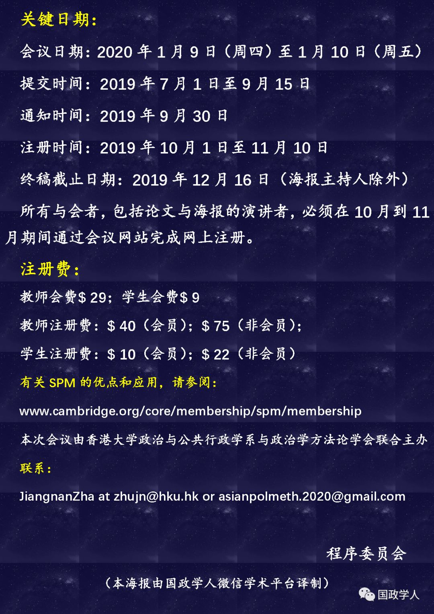
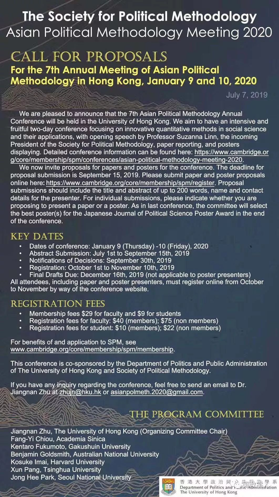

收录于合集
以下文章来源于海国图智研究院 ，作者海国图智001
 海国图智研究院 .
海国图智研究院 .
海国图智研究院，定位于新型、独立的国际关系社会智库，诚愿以热点资讯、原创评论和深度报告等优质学术产品，服务于全球化背景下“开眼看世界”的中外读者。

为帮助社会科学研究人员掌握科学研究方法、促进高质量的科研产出，海国图智研究院每年为国内各高校、智库的教师、学生、科研工作者提供课程培训，即为SSCI 写作与发表训练营。历届训练营效果显著，诸多学员在得到各位导师的指点后，其学术成果赢得学界以及核心期刊编辑的肯定， 部分学员成功于 SSCI / CSSCI 期刊发表文章，并进入高校任职。 第六期训练营将转为线上授课。
 活动时间
活动时间
2019年8月11日-8月23日
 主要内容
主要内容
如何寻找属于自己的 研究主题 与方向？
如何寻找合适的研究与 分析工具 ？
如何撰写高质量 SSCI/CSSCI 论文？
如何找到 目标期刊 ？
如何让自己的文章被期刊接受？
 活动收获
活动收获
导师将亲身讲述他们最新论文研究成果，让你了解导师是如何进行选题与开题的。他们还将就目前SSCI与CSSCI社会科学类论文主流研究方法进行剖析，让你在搜集材料和确定论证角度时有的放矢。同时，你将学习如何修改一篇论文，知悉学术论文的结构、用词、论证等常规错误。如果你希望发表论文，你还能学到一些投稿技巧，包括如何选择正确的期刊，如何与期刊编辑和审稿人的沟通，如何回应他们的批评。
 授课方式
授课方式
线上：CCTALK
导师团成员
1．陈定定（暨南大学教授）
现为暨南大学国际关系学院/21世纪丝绸之路研究院副院长、教授，博士生导师。另外，曾任国际研究学会（ISA）亚太区副会长（2014-2018），现兼任德国全球公共政策研究所客座研究员，美国霍普金斯大学SAIS学院客座研究员。陈定定长期从事国际关系理论、中美关系、中国外交和国际公众舆论等学术领域的研究，并取得丰硕成果。他于1997年在中国人民大学获得国际经济专业学士学位，于2007年在芝加哥大学获得政治科学博士学位。
2.何凌云（暨南大学教授）
何凌云，暨南大学教授、博导；入选2010年度新世纪优秀人才，2011年度北京市社科理论人才百人工程，担任了世界计算经济学会会刊Computational Economics (SSCI,SCI) 副主编、编委、客座主编, Fractals (SCI) 共同主编、编委，Emerging Markets Finance and Trade (SSCI) 客座主编，及其他多家国际学术期刊的副主编、学术主编和编委职务; 兼任了加拿大卡尔加里大学 (University of Calgary)、澳大利亚麦考瑞大学 (Macquarie University)、俄罗斯友谊大学 (RUDN University)、北京理工大学能源与环境研究中心、中国农业大学、南京信息工程大学等国内外著名大学的兼职/客座教授、兼职博导、或特聘博士答辩委员会专家，以及中国优选法统筹法与经济数学研究会理事、能源经济与管理研究分会常务理事, 国际能源经济学会中国委员会理事 (International Association for Energy Economics, IAEE)等国内、国际重要学术职务。
3.Johannes Urpelainen（约翰·霍普金斯大学教授）
JU是约翰·霍普金斯大学萨伊斯分校能源、资源和环境苏丹·本·阿卜杜勒- 阿齐兹王子教授，也是可持续能源政策倡议(ISEP)的创始人。2009年，他在密歇根大学获得政治学博士学位，随后在哥伦比亚大学度过了8年。约翰内斯是四本书的获奖作者，在环境政治、能源政策和全球治理方面发表了100多篇文章。他教授以行动为导向的能源和环境政策课程，使下一代全球领导人具备渊博的知识、先进的分析技能和变革社会变革的激情。作为世界顶级能源政策专家之一，约翰内斯经常为政府、国际组织和私营部门提供能源和环境方面的建议。作为ISEP的创始董事，JU负责该计划的愿景、战略和总体管理。他在ISEP下的工作提供了务实但有效的方法，以最小的环境影响向世界人口提供负担得起的和丰富的能源。在他的业余时间，JU阅读传记，并试图提高他的印地语水平。
4.孟维瞻（复旦大学）
孟维瞻，复旦大学中国研究院助理研究员，“国政学人”微信学术平台学术顾问。2018年在香港大学政治学系获得博士学位，主要研究领域为国际关系理论、东亚安全、中国政治与对外关系、中国学。曾经在International Relations of the Asia-Pacific,、Korea Observer、The China Review等英文核心杂志上发表论文或书评，曾经在《当代亚太》、《国际政治科学》、《同济大学学报》、《人大复印资料》等中文核心期刊上发表论文，已经出版专著一部、译著四部。
5.王正绪（复旦大学教授）
王正绪，复旦大学国际关系与公共事务学院教授、上海千人特聘教授、东方学者特聘教授。王正绪曾任中英文双语学术期刊杂志《视界》（Perspectives）联合主编，纽约帕尔格雷夫·麦克米伦出版社“今日亚洲”系列图书编辑顾问，起任亚洲公共舆论研究期刊（Asian Journal of Public Opinion Research）创始编委，亚洲比较政治期刊(Asian Journal of Comparative Politics)创始编委。
6.袁载俊（香港中文大学出版社）
香港中文大学出版社编辑， SSCI 期刊 China Review 编辑。
7.张春满（复旦大学）
张春满，复旦大学社会科学高等研究院研究员，美国约翰·霍普金斯大学政治学博士，高研院青年副研究员、专职研究人员、硕士生导师。主要研究领域：中国政治、比较政治、公共管理和国际关系等。目前，他已经在国内外顶级SSCI和CSSCI期刊发表论文20多篇。他是American Political Science Association和InternationalStudies Association会员，并兼任SSCI期刊Journal of Chinese Political Science编辑。
8.赵穗生（丹佛大学教授）
赵穗生，美国丹佛大学约瑟夫·科贝尔国际关系学院终身职正教授兼美中合作中心执行主任，亚太安全合作理事会美国委员会董事会董事，哈佛大学费正清中心研究员，美中关系全国委员会委员，英文《当代中国》主编，北京大学、中国人民大学、上海复旦大学、上海外国语大学兼职教授，曾任斯坦福大学胡佛研究所国家研究员，华盛顿学院政治系副教授，柯比学院政府系助理教授，副教授。赵穗生拥有美国加州大学政治学硕士、博士，密苏里大学社会学硕士，北京大学经济学学士和硕士。1985年来美国前，赵穗生曾任职于国务院经济研究中心，财政部外事财务司，北京大学南亚研究所等单位。
赵穗生出版了十部英文著作，包括《权力的设计》、《东亚权争》、《邓小平时代的决策过程》、《穿越台湾海峡》、《中国外交政策》、《民族国家的建立》、《中国民主的前景》、《中国政治改革辩论》、《转型中的中美关系》、《中美在东北亚的竞争与合作》等。他还有50多篇英文学术与政策论文发表于《华盛顿季刊》、《威尔逊季刊》、《政治学季刊》、《中国季刊》等。
9.周忆粟（澳门大学）
澳门大学教育学院教授。2005年，他在华东师范大学取得统计学学位，2008年前往美国密歇根州立大学攻读博士学位，并在2012年获得教育政策博士学位。他的研究兴趣包括教育政策、中国教育发展、比较教育、教育经济学、教师劳动力市场。他发表了十几篇SSCI文章和五本专著，如已被社会学方法与研究收稿的Generalizedinflated discrete models: A strategy to work with multimodal discretedistributions. Sociological Methods & Research
导师名单仍在更新中。
 活动收费
活动收费
**早鸟价/合作价：1899/人
**
常规价： 2099/人
三人成团：1699/人
注：
早鸟价：于 2019年8月2日 之前报名并缴费的学员所享价格
合作价：往期学员、前/现实习生及合作方推荐学员所享价格
 往期学员感言
往期学员感言
在来训练营前已明确前来学习的目的，包括（1）学习写作方法（2）学习论文写作与发表注意事项（3）在过去从未考虑发表（4）已有的文章能够得到老师的意见。
经过在训练营的学习，发现不光是英文写作还有方法上有待提高，如：指导程序、如何和编辑沟通、如何让文章更容易被接受、如何保持心态，本次训练营让我对此有了准备。
——学员A
收获了很多方面的知识，比如清楚了发论文是什么东西，现在了解了流程、发表技巧和可能遇到的困难，心里有底，不会特别慌。另一个感触是本次学员群体比较多样，李玮老师的故事和冬哥作为博士生遇到的困境对自己未来道路有启示意义。然后，自己要去美国读书，很多老师有美国背景，或者正在美国教书，收获了很多未来经验，例如春满老师说的安全方面的经验，学术迷弟也见到了偶像，例如春满老师、赵穗生老师。最后想说和各位学员们交流得很开心。感谢大家！
——学员B
在训练营收获特别大，总结起来是三句话。第一是对指导论文被毙的原因有了一定的认识，第二是学习了怎么让论文得以通过的方法，第三是明确了了未来发展的方向。
以前论文踩了很多雷区，例如没有目标感，字数等细节没有注意，文章翻译强调太重，在未来会更加注意。
——学员C
本次培训班超出预期。首先，本次培训班拓宽了我的研究视角。之前海外安保研究看的很多是英文文献，不知如何做对比研究，通过和黄老师的交流和自己的思考，发现自己的研究视角比较局限。其次也得到了很多技巧提示，例如一体化思维，3+3+3的论文周转模式。还有就是提高了信心，觉得英文文章也可以尝试。
总之，这次培训性价比很高，感谢陈老师，每天都有很多干货，同时培训费用较低。最后感谢小的学术共同体和默默付出的工作人员。
——学员D
以下情况学员需要慎重考虑是否报名本次活动
1、希望得到理/工/商/医/农科论文训练的学员
如果你希望提高自己理/工/商/医/农科专业的学术写作能力，请下拉页面直接阅读我们的导师介绍。我们的导师主要研究国际关系、政治科学、经济学、教育、能源和环境。
2、完全不了解论文基础写作 的学员
一些高中老师会说“大学老师会教这个，我就不教了”，而大学老师默认高中老师已经教过了。我们的导师也很可能会跳过基础的论文写作知识，默认学员已经掌握这些基础知识，如“什么是学术论文”“学术论文由哪几部分构成”。
3、未来三年内不打算撰写论文的学员
三年内不写论文，你甚至会想不起来自己参加过训练营。
4、有意尝试学术不端行为的学员
爱惜羽毛，人人有责。
当然
以上只是建议
如果你坚持要报
我们总不能拒绝你
如果你对本期训练营感兴趣
可在本公众号 后台回复“SSCI”
并扫二维码加入海图咨询群
助教们将在工作时间
（周一至周五10:30-12:00；15:00-16:30）
为大家答疑
_ ** _ 本文由** _ ** _ 海国图智研究院** _ ** _ 委托 国政学人平台 转发推广** 会议预告





详细信息请点击左下角 阅读原文 了解
更多阅读
【重磅速递】约瑟夫·奈：美国霸权的兴衰：从威尔逊到特朗普 | 国政学人
【重磅推荐】巴里·布赞：英国学派视角下的中国崛起 | 国政学人
【重磅速递】米尔斯海默：注定失败：自由主义国际秩序的兴衰 | 国政学人
【百年国关】历史在国际社会中的应用：从巴黎和会到现在 | 国政学人
【国际组织】IO杂志：联合国维和行动的武力运用问题研究 | 国政学人
【国际秩序】为什么自由主义国际秩序理念将美国外交政策引入歧途？| 国政学人
【关系理论】“关系”：世界政治关系理论的中国话语 | 国政学人
【英国学派】张勇进：中国与全球国际社会中的自由主义等级制：实力与对规范变迁的协商 | 国政学人
【地区秩序】论经济实力的可转化性：中国经济崛起与东亚安全秩序 | 国政学人
【中俄关系】不得已的伙伴：系统-单元动态与中俄关系 | 国政学人
【IPE研究】美国对外贸易政策的“1934年体制”是如何形成的？| 国政学人
【现实主义】斯蒂芬·沃尔特：傲慢的终结与美国克制的新时代 | 国政学人
【理论批判】系统、层次与结构理论：沃尔兹的理论并非系统理论 | 国政学人
【外交政策】单极体系下的不和平状态与美国外交政策 | 国政学人
【欧洲研究】资本主义多样性与合规：加入欧盟后中东欧的经济改革 | 国政学人
【理论研究】吴建树：权力、道德、均势、联盟与摩根索——汉斯·摩根索的经典现实主义思想再解读
【友谊国关】将友谊重新引入国际关系：从中国到西方的关系本体论
【定量研究】政党实力和经济增长（Party Strength and Economic Growth）| 国政学人
【台湾学者】向骏：美国从“霸权稳定”到“霸凌不稳定” | 国政学人
【理论研究】巴里·布赞等：重思日本：主流国际关系理论的偏见 | 国政学人
【南亚研究】南亚对冲：中印竞争中经济和安全利益的平衡 | 国政学人
【外交政策】美国霸权的自我毁灭：华盛顿浪费了单极时代 | 国政学人